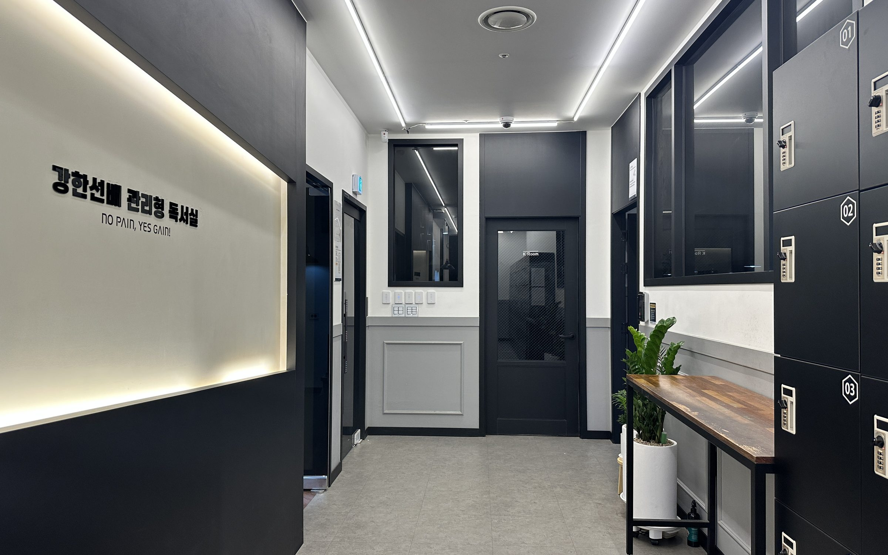

01
생활 관리
생활 규정은 누구에게나 똑같이, 엄격하게 적용합니다.
출결, 순찰, 상벌점 기록을 매일 남기고, 한 달 치를 모아 리포트로 보내드립니다.
- 매 교시 출결 확인
- 20분 단위 순찰
- 상벌점 생활 기록

동탄 관리형 프리미엄 독서실
각자의 상황에 맞추어
진심을 다해 관리합니다.
매 교시 출결 확인, 20분 단위 순찰, 상벌점, 1:1 멘토링까지
모든 관리 기록을 매달 리포트로 보내드립니다.
강강한선배는
자리만 빌려주는 곳이 아닙니다. 최상위권 대학 재학생 멘토와 운영 조교가 아이가 언제 왔고 무엇을 공부했는지 매일 확인하고, 그 기록을 부모님께 전부 보여드립니다.
강한선배의 하루 관리
휴대폰은 관리실에 보관하고, 교시가 시작될 때마다 자리에 있는지 확인합니다.
조는지, 자리를 비웠는지, 바른 자세로 공부하고 있는지 돌면서 봅니다.
지각, 잡담, 자리 이탈은 바로 벌점으로 기록하고, 끝까지 집중한 학생에게는 상점을 줍니다. 모든 상벌점에는 사유와 날짜가 남습니다.
최상위권 대학 재학생 담임 멘토가 매주 공부 계획과 컨디션을 점검합니다.
방학에는 오전 9시부터 밤 12시까지 관리하고, 아이는 앱에서 오늘의 공부 계획을 끝까지 체크합니다.
한 달 동안의 출결, 순찰, 상벌점, 멘토링 기록을 월간 리포트로 정리해 카카오톡으로 보내드립니다.


월간 리포트 · 원생 기록실제 화면 · 이름과 기록은 예시입니다
숫자로 보는 강한선배
합격 · 재학 대학
서울대부터 의·치·약 계열까지, 강한선배에서 수험생활을 보낸 선배들이 합격한 학교입니다.
강한선배 앱
학생은 상벌점 확인부터 과제, 영단어 시험, 질문, 도시락 신청까지 앱으로 하고, 학부모님은 출결과 리포트를, 선생님은 기록과 답변을 같은 앱에서 봅니다. 아래는 모두 실제 앱 화면입니다.
실전 훈련
매달 대성 더프리미엄 모의고사를 원내 시험실에서 봅니다. 시간표, 수험표, 가채점표까지 수능 날과 똑같이 맞추고, 틀린 문제는 질의응답과 담임 멘토링에서 다시 짚고 넘어갑니다.

학습 공간
정자세 자습실, 1인 집중 부스, 휴식 라운지를 따로 나눠 두었습니다.
공부할 땐 공부만, 쉴 땐 제대로 쉬도록요.
강한 관리 시스템
생활 규정은 누구에게나 똑같이, 엄격하게 적용합니다.
출결, 순찰, 상벌점 기록을 매일 남기고, 한 달 치를 모아 리포트로 보내드립니다.
최상위권 대학 재학생이 매주 1:1로 멘토링합니다.
성적과 성향, 입시 전략에 맞는 담임 멘토를 배정하고, 공부 계획부터 슬럼프까지 매주 1:1로 관리합니다. 나눈 이야기는 매번 기록으로 남깁니다.

앉아만 있는 시간은 공부 시간으로 치지 않습니다.
교시제로 공부할 때와 쉴 때를 나누고, 휴대폰은 맡겨 두고, 자세는 순찰과 CCTV로 확인합니다.

성적을 보고, 다음 달 계획을 세웁니다.
모의고사 성적 추이, 멘토링 종합의견, 상벌점, 순찰 점검을 한 장에 모아 담당 선생님이 매달 카카오톡으로 보내드립니다. 이 성적을 바탕으로 희망 대학·학과에 맞춘 입시 전략을 함께 세웁니다.
평범한 독서실과
등록 절차
온라인이나 전화로 신청하시면 영업일 기준 24시간 안에 연락드립니다.
지금 공부 상황을 살펴보고, 자리와 관리 방식을 직접 보여드립니다.
성적과 성향에 맞는 담임 멘토를 배정하고 공부 계획을 짠 뒤, 그날부터 관리가 시작됩니다.
합격생 · 재원생 후기

LEADERSHIP
같은 3등급이어도 아이마다 막히는 곳이 다릅니다. 점수만 봐서는 알 수 없는 것들을 매일 가까이에서 보려고 합니다.
그래서 최상위권 대학 재학생 멘토와 운영 조교가 출결과 공부, 컨디션까지 관리하고, 그 기록을 매달 한 장의 리포트로 부모님께 보내드립니다.
부모님께 보여드리지 못할 관리라면
애초에 하지 않습니다.

CHIEF DIRECTOR
강한선배 운영 전체를 맡고 있습니다. 멘토진의 학습 지도와 운영진의 생활 관리가 따로 놀지 않도록 매주 맞춰 보고, 목표 대학에서 거꾸로 계산해 지금 해야 할 공부를 정합니다.
정지훈 총괄 소개 전체 보기 →선배 멘토진 · 2027 합격 멘토링 시스템
성적, 성향, 입시 전략에 맞춰 서울대·연세대·고려대 재학생 중 가장 잘 맞는 멘토를 담임으로 배정합니다. 희망 대학 설정부터 성적 분석, 주간 계획까지 담임 멘토가 1:1로 전담합니다.
운영진
매 교시 출결 확인, 20분 단위 순찰, 자세와 생활 태도까지. 운영 조교가 아이의 하루를 꼼꼼하게 확인하고 기록합니다.
강한 이야기
시즌 특별 모집
2개월 총 138만 원 · 지역화폐 결제 가능 · 등록 대기금 20만 원
2027년 7월 여름방학에 열 예정입니다. 미리 문의를 남겨 주시면 모집이 시작될 때 먼저 연락드립니다.
자주 묻는 질문
더 궁금한 점은 전화나 방문 상담 때 편하게 물어보세요. 상담은 무료입니다.

입회 상담
우리 아이와 맞는 곳인지부터 솔직하게 말씀드립니다.
지금 공부 상황을 같이 살펴보고, 자리와 관리 방식을 직접 보여드립니다. 상담은 무료입니다.